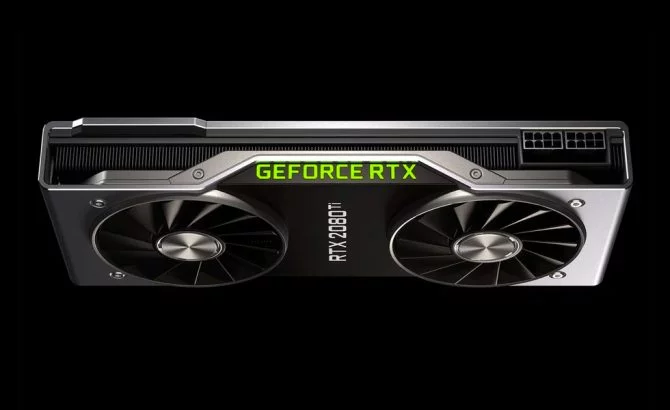
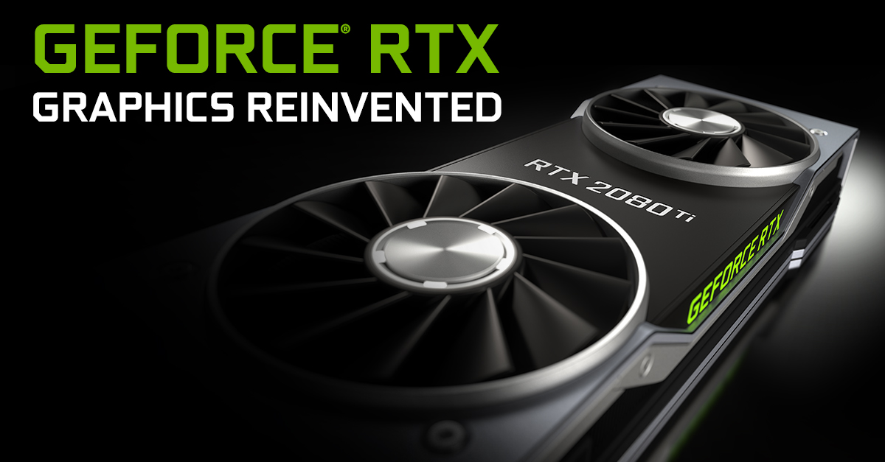

NVIDIA nos había anticipado que hoy revelaría su nueva generación de tarjetas gráficas y
así fue, las RTX 20 llegan con novedades muy interesantes para seguir dominando el mercado.
En total se han presentado tres tarjetas: GeForce RTX 2070, RTX 2080 y RTX 2080 Ti, esta última la de mayor rendimiento.
Si bien en los últimos días se había filtrado una gran cantidad de información sobre los nuevos productos, gracias a la
presentación oficial ya es posible confirmar los datos que te contaremos a continuación.

Nueva arquitectura y Ray Tracing
Las GeForce RTX 20 dan la bienvenida a una nueva arquitectura: Turing. NVIDIA menciona que su tecnología les ha permitido desarrollar Ray Tracing,
una nueva técnica de renderizado. Esta permitirá renderizar más elementos en tiempo real con un gran nivel de detalle,
permitiendo crear experiencias fotorrealistas con escenarios de videojuegos que muestran un gran apartado visual.
Jensen Huang, director ejecutivo de NVIDIA, mencionó en la presentación que Turing estuvo en desarrollo
durante 10 años y es su avance más grande desde la arquitectura CUDA. El chip de las tarjetas hace uso
de 18.9 millones de transistores e incluye tres componentes clave:
- Núcleos RT dedicados al Ray Tracing.
- Núcleos Tensor dedicados a la inteligencia artificial.
- Núcleos Turing SM para procesamiento.

Precios y fecha de disponibilidad
No será nada barato obtener cualquiera de las tres tarjetas que se presentaron. Algunos usuarios podrían quedar satisfechos
con el potencial de la RTX 2070, la cual ya puede dar muy buenos resultados. A continuación la lista de precios:
- GeForce RTX 2070 (8GB GDDR6) - 599 dólares/639 euros
- GeForce RTX 2080 (8GB GDDR6) - 799 dólares/849 euros
- GeForce RTX 2080 Ti (11GB GDDR6) - 1.199 dólares/1259 euros